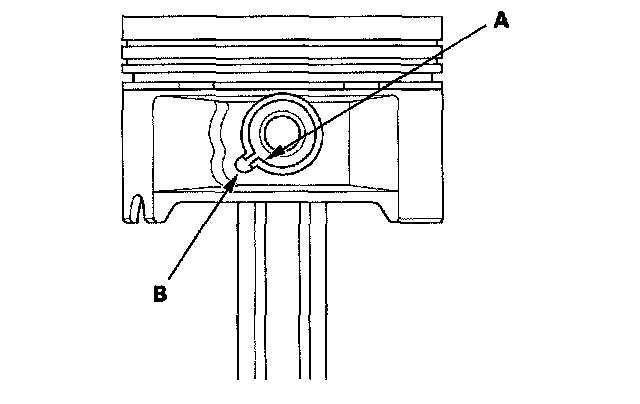
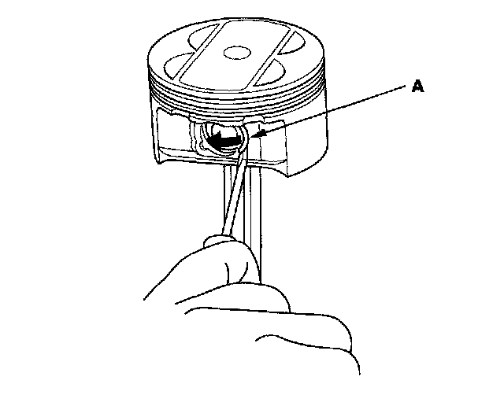
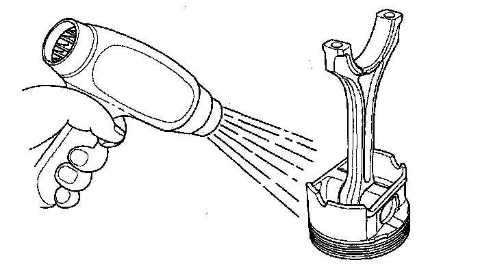
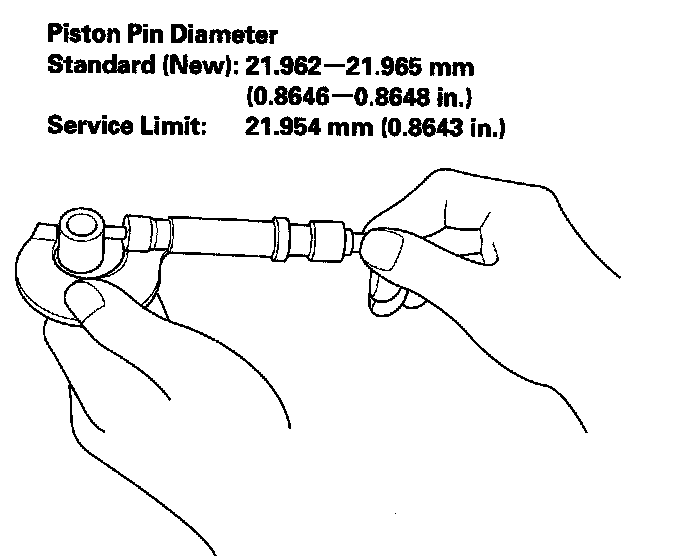
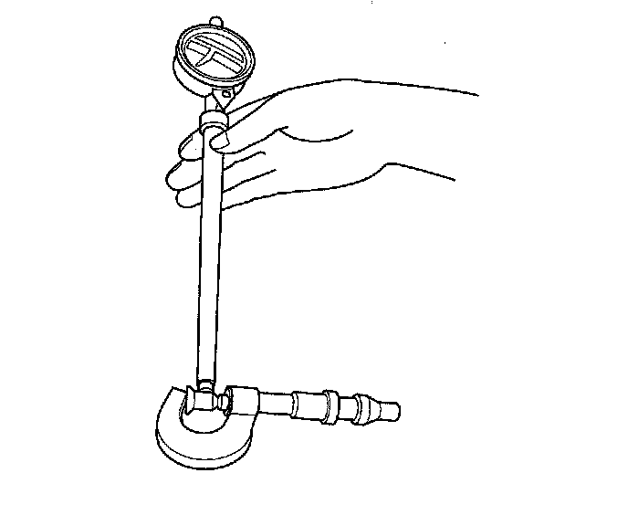
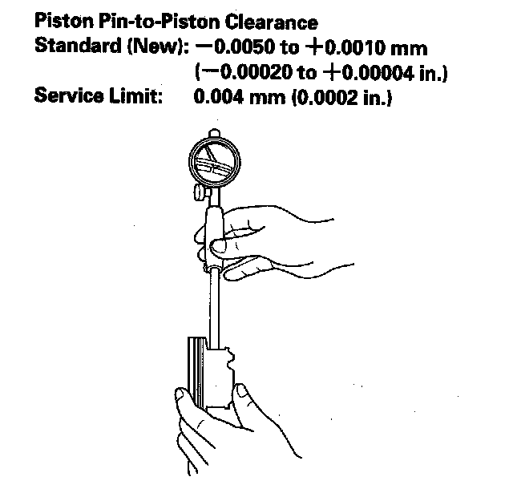
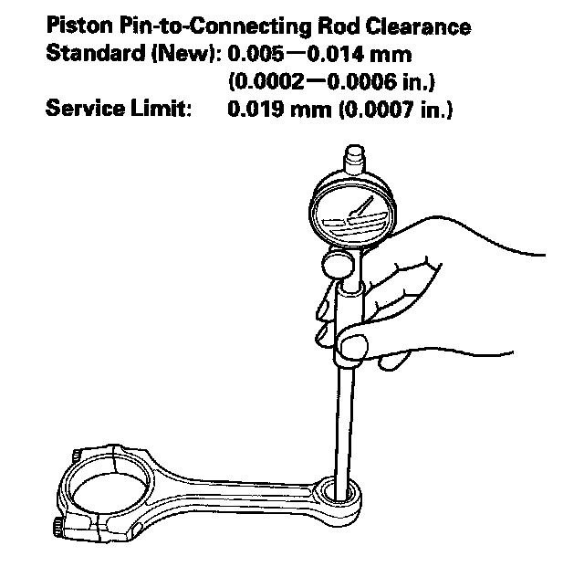
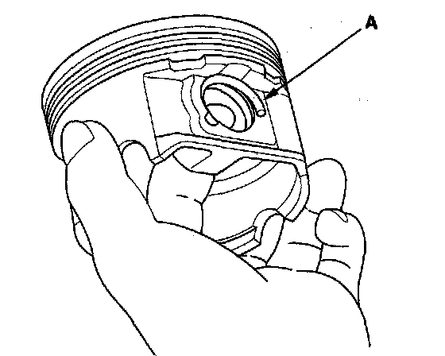
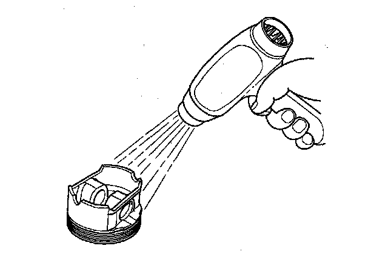
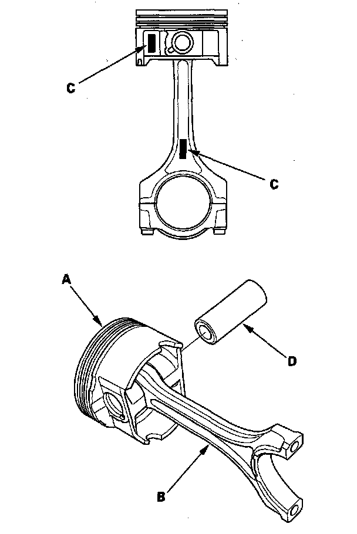

Connecting Rod: Service and Repair
Piston, Pin, and Connecting Rod ReplacementDisassembly
1. Remove the piston from the engine block.
2. Apply new engine oil to the piston pin snap rings (A) and turn them in the ring grooves until the end gaps are lined up with the cutouts in the piston pin bores (B).
NOTE: Take care not to damage the ring grooves.

3. Remove snap rings (A) from both sides of the piston. Start at the cutout in the piston pin bore. Remove the snap rings carefully so they do not go flying or get lost. Wear eye protection.

4. Heat the piston and connecting rod assembly to about 158° F (70° C), then remove the piston pin.

Inspection
NOTE: Inspect the piston, piston pin, and connecting rod when they are at room temperature.
1. Measure the diameter of the piston pin.

2. Zero the dial indicator to the piston pin diameter.

3. Check the difference between the piston pin diameter and piston pin hole diameter on the piston.

4. Measure the piston pin-to-connecting rod clearance.

Reassembly
1. Install a piston pin snap ring (A) only on one side.

2. Coat the piston pin bore in the piston, the bore in the connecting rod, and the piston pin with new engine oil.
3. Heat the piston to about 158° F (70° C).

4. Assemble the piston (A) and connecting rod (B) with the embossed marks (C) on the same side. Install the piston pin (D).
NOTE: Apply new engine oil to the piston pin.

5. Install the remaining snap ring.